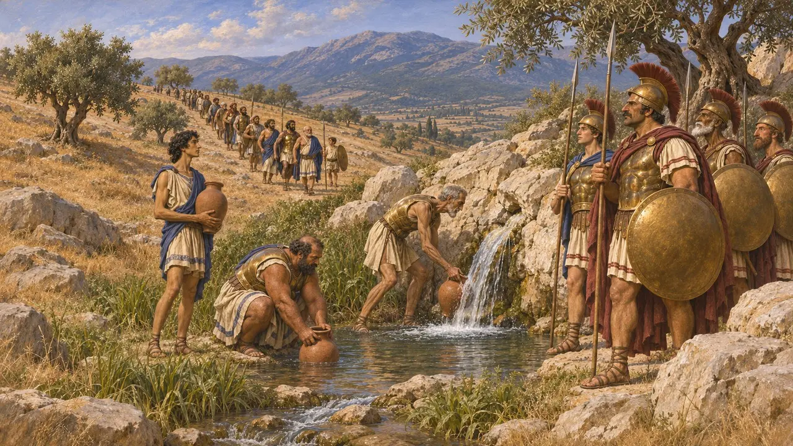
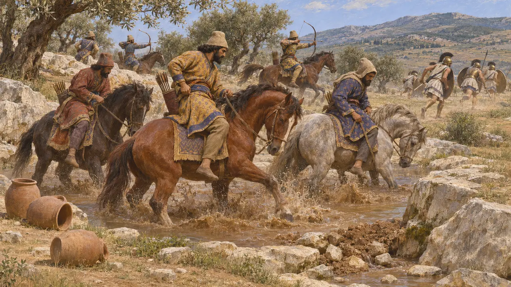
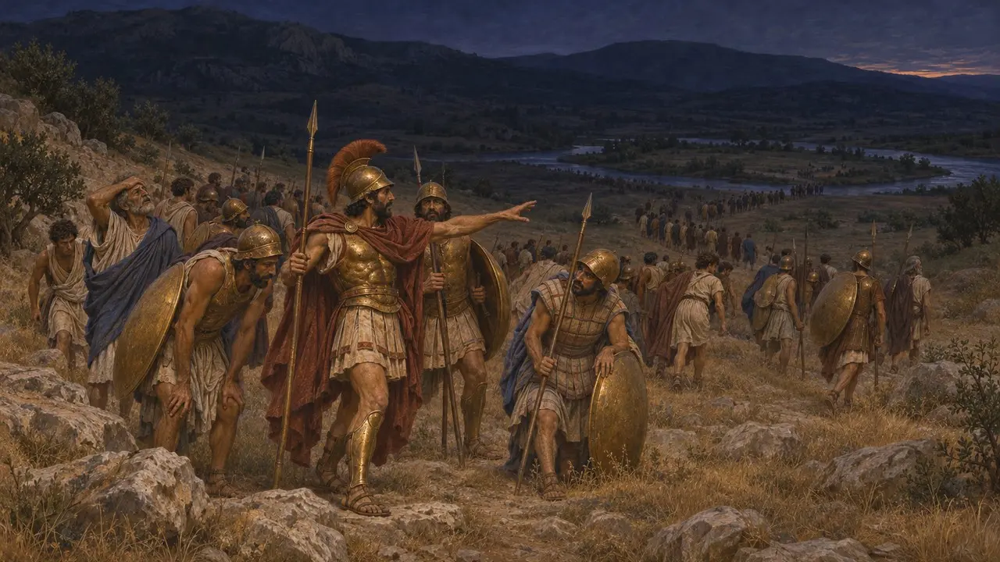
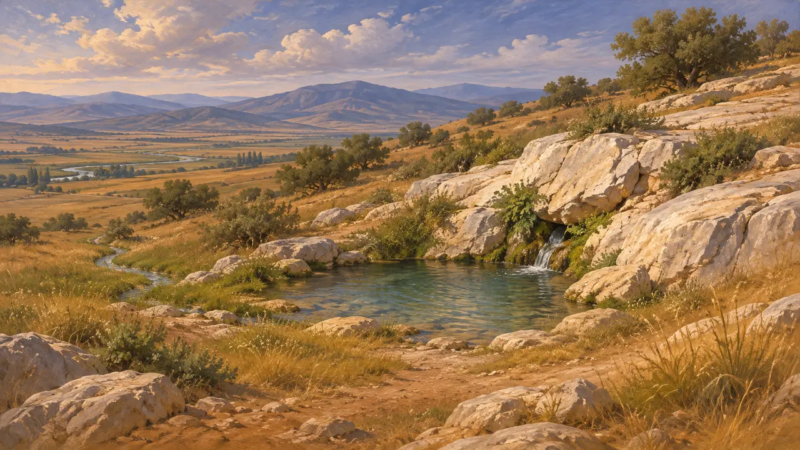

ガルガフィアはプラタイアの地、キタイロン山の山麓にあった泉である。紀元前479年、ギリシア軍はこの泉のそばに陣を張って水を汲んだ。王の弓兵がアソポス川への道を断っていたからである。マルドニオスの騎兵は泉を塞いで汚し、ギリシア軍は夜陰に乗じて陣を移さねばならなかった。
ゲームでは： ガルガフィアは、プラタイア編の年代記、戦場での説明、兵士たちの会話の中で、王の騎兵が汚した泉として名が挙がる。

ギリシア人たちが泉へ下りてくる
古代の記述エリュトライでマシスティオスが死んだのち、ヘロドトスによれば、ギリシア人は水に恵まれたプラタイアのほうへ下り、ガルガフィアの泉のそばに陣を構えた。スパルタ人は、その近くの戦列の右翼を守った。
Herodotus 9.25

水辺の馬
古代の記述ヘロドトスによれば、ペルシア騎兵とその弓兵がギリシア人をアソポス川から遠ざけたため、全軍がガルガフィアの泉から水を汲んでいた。やがて騎兵が突入して泉をふさいで汚し、ギリシア人を悩まし続けたので、彼らは持ち場を保てなくなった。
Herodotus 9.49

夜の行軍
古代の記述水も食料も尽きたギリシア軍の将軍たちは、アソポス川と泉から10スタディオン離れた、川が分かれる場所にある「島」へ移ることを決めた。夜間の行軍は混乱に陥り、翌日マルドニオスが攻撃をしかけて、プラタイアの戦いが続いた。
Herodotus 9.50-57

それはどこだったか?
係争中この泉の位置は確定できない。19世紀以来、旅行者たちはプラタイア北東の斜面にあるいくつもの泉を候補に挙げてきたが、アソポス川とその支流の流路も移り変わっている。戦場を訪れたパウサニアスも、これに決着をつけてはいない。
W. K. Pritchett, Studies in Ancient Greek Topography 1, 1965
出典
- Herodotus 9.25, 9.49-57
- W. K. Pritchett, Studies in Ancient Greek Topography 1, 1965